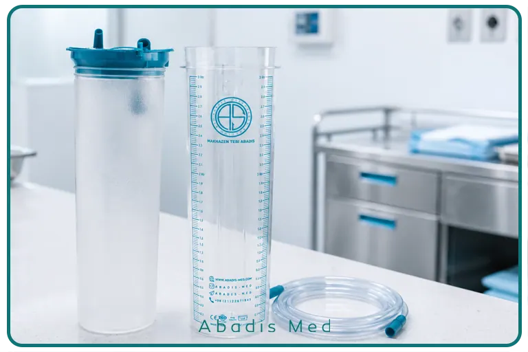
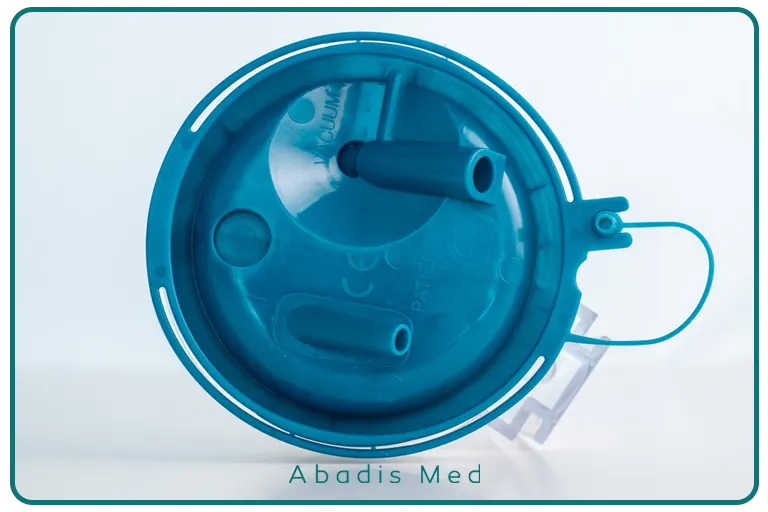
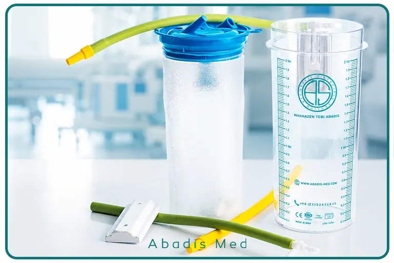

چکیده
کیسه ساکشن یکبار مصرف یکی از تجهیزات مهم برای جمعآوری ترشحات، خون و سایر مایعات بدن در بیمارستانها و مراکز درمانی است. انتخاب درست این محصول میتواند به کاهش تماس کادر درمان با ترشحات عفونی، جلوگیری از سرریز مایعات، حفاظت از سیستم ساکشن مرکزی و مدیریت بهتر پسماندهای بیمارستانی کمک کند.
کیسههای ساکشن از نظر ظرفیت، نوع فیلتر، وجود پودر ژلکننده و استریل یا غیراستریل بودن با یکدیگر تفاوت دارند. به همین دلیل، واحد خرید باید محصول را متناسب با نوع دستگاه ساکشن، حجم ترشحات و نیاز هر بخش انتخاب کند.
در این مقاله، مهمترین نکات خرید کیسه ساکشن یکبار مصرف برای مراکز درمانی و ویژگیهای مدلهای مختلف کیسه ساکشن یکبار مصرف آبادیس را بررسی میکنیم.
کیسه ساکشن یکبار مصرف چیست؟
در زمان انجام ساکشن، ترشحات، خون و سایر مایعات بدن از طریق ساکشن تیوب در کیسه ساکشن جمعآوری میشوند. در سیستمهای قدیمی، این مایعات داخل مخازن ثابت یا چندبارمصرف جمعآوری میشدند و کارکنان خدمات باید پس از هر بار استفاده، مخزن را تخلیه، شستوشو و ضدعفونی میکردند.
این روش علاوه بر مصرف آب، مواد ضدعفونیکننده و زمان کارکنان، احتمال تماس مستقیم با ترشحات و ضایعات عفونی را نیز افزایش میدهد.
کیسه ساکشن یکبارمصرف داخل یک مخزن نگهدارنده قرار میگیرد و مایعات ساکشنشده را در خود جمع آوری می نماید و پس از پرشدن کیسه، ورودیها بسته میشوند و کیسه مطابق دستورالعمل مدیریت پسماند مرکز درمانی دفع میشود.
استفاده صحیح از کیسه ساکشن یکبارمصرف میتواند مزایای زیر را به همراه داشته باشد:
- کاهش تماس مستقیم کارکنان با ترشحات بیماران
- کمک به کنترل عفونت در مراکز درمانی
- کاهش نیاز به شستوشوی مخازن دائمی
- کاهش مصرف آب و مواد ضدعفونیکننده
- جلوگیری از ورود مایعات به سیستم ساکشن مرکزی
- تعویض سریع و آسان کیسه
- کمک به جمعآوری و دفع بهداشتیتر ترشحات
- کاهش زمان مورد نیاز برای آمادهسازی مجدد مخزن ساکشن
البته دستیابی به این مزایا به انتخاب محصول مناسب، نصب صحیح و رعایت دستورالعملهای کنترل عفونت و دفع پسماند بستگی دارد.
هنگام خرید کیسه ساکشن به چه نکاتی توجه کنیم؟
کیسههای ساکشن ممکن است از نظر ظاهری شبیه به یکدیگر باشند، اما تفاوت در ظرفیت، نوع فیلتر، کیفیت اتصالات و وجود پودر ژلکننده میتواند بر نحوه استفاده از آنها اثر بگذارد.
مهمترین معیارهای خرید کیسه ساکشن یکبار مصرف عبارتاند از:
۱. انتخاب ظرفیت مناسب
اولین معیار برای انتخاب کیسه ساکشن، ظرفیت آن است. استفاده از یک ظرفیت برای تمام بخشهای بیمارستان همیشه انتخاب مناسبی نیست؛ زیرا میزان ترشحات در بخشهای مختلف با یکدیگر تفاوت دارد.
استفاده از کیسه کوچک در بخشهای پرمصرف باعث افزایش دفعات تعویض میشود. از طرف دیگر، استفاده از کیسه بزرگ در بخشهای کممصرف نیز ممکن است فضای بیشتری اشغال کند و هزینههای مرکز را افزایش دهد.
کیسههای ساکشن آبادیس در ظرفیتهای یک، دو و سه لیتری تولید میشوند.
|
ظرفیت کیسه |
کاربردهای پیشنهادی |
|
یک لیتری |
آمبولانس، دندانپزشکی، چشم، کودکان و کاربردهای کمحجم |
|
دو لیتری |
ریه، آندوسکوپی، گوارش، ICU، CCU، بخش عفونی و بخشهای بستری |
| سه لیتری |
اتاق عمل، قلب و عروق، جراحیهای پرترشح، بخش عفونی و لیپوساکشن |
این تقسیمبندی یک راهنمای کلی است. انتخاب نهایی باید بر اساس حجم ترشحات، نوع عمل، میزان مصرف بخش و نظر مسئول تجهیزات پزشکی یا کنترل عفونت انجام شود.
کیسه ساکشن یک لیتری
کیسه ساکشن یک لیتری برای بخشهایی مناسب است که معمولاً حجم کمتری از ترشحات در آنها جمعآوری میشود. ابعاد مناسب و ظرفیت کمتر این مدل، استفاده از آن را در آمبولانس، دندانپزشکی، چشم و بخش کودکان آسانتر میکند.
پیش از خرید باید مشخص شود که ظرفیت یک لیتر پاسخگوی مصرف بخش است و باعث تعویض مکرر کیسه نمیشود.
کیسه ساکشن دو لیتری
کیسه ساکشن دو لیتری یکی از گزینههای مناسب برای مصرف عمومی مراکز درمانی است. این ظرفیت در بخشهایی مانند ریه، آندوسکوپی، گوارش، ICU، CCU و بخشهای بستری کاربرد دارد.
در محصولات آبادیس، کیسه دو لیتری میتواند بهصورت تکی استفاده شود. همچنین در صورت نیاز و با استفاده از پایه و اتصالات مناسب، امکان اتصال چند کیسه بهصورت سری و افزایش ظرفیت تا ۸ لیتر وجود دارد.
کیسه ساکشن سه لیتری
کیسه ساکشن سه لیتری برای بخشها و اعمالی مناسب است که در آنها حجم بیشتری از مایعات و ترشحات جمعآوری میشود. اتاق عمل، بخش قلب و عروق و برخی جراحیها از کاربردهای اصلی این ظرفیت هستند.
در صورت استفاده از پایه و اتصالات مناسب، امکان اتصال سری کیسههای سه لیتری و افزایش ظرفیت تا ۱۲ لیتر نیز وجود دارد. این قابلیت میتواند در جراحیهایی که حجم ترشحات بالاست، نیاز به تعویض کیسه در حین عمل را کاهش دهد.

۲. توجه به نوع فیلتر کیسه ساکشن
فیلتر یکی از مهمترین قسمتهای کیسه ساکشن است. وظیفه اصلی فیلتر، جلوگیری از سرریز مایعات و کمک به حفاظت از دستگاه یا سیستم ساکشن مرکزی است.
اگر مایع جمعآوریشده وارد مسیر وکیوم شود، ممکن است باعث آلودگی شلنگها، رگولاتور یا سیستم ساکشن مرکزی شود. به همین دلیل، هنگام خرید باید نوع فیلتر و عملکرد آن بررسی شود.
فیلتر هیدروفوبیک چیست؟
فیلتر هیدروفوبیک بهگونهای طراحی شده است که از عبور مایع به سمت مسیر وکیوم جلوگیری کند. زمانی که سطح مایع به فیلتر میرسد، مسیر عبور مایع محدود یا مسدود میشود و از سرریز محتویات کیسه به داخل سیستم ساکشن جلوگیری میکند.
این ویژگی در بخشهایی که حجم ترشحات قابل توجه است یا حفاظت از ساکشن مرکزی اهمیت زیادی دارد، بسیار کاربردی است.
۳. وجود پودر ژلکننده
برخی از کیسههای ساکشن آبادیس دارای پودر ژلکننده هستند. این پودر پس از تماس با مایعات جمعآوریشده، آنها را غلیظ یا ژلهای میکند.
ژلشدن محتویات میتواند حرکت آزاد مایع داخل کیسه را کاهش دهد و احتمال پاشش یا نشت هنگام جابهجایی و دفع را کمتر کند. به همین دلیل، وجود پودر ژلکننده یکی از ویژگیهای مهم برای مدیریت بهتر پسماندهای بیمارستانی است.
مزایای پودر ژلکننده عبارتاند از:
- کاهش حرکت مایع داخل کیسه
- کاهش احتمال پاشش هنگام حمل
- جابهجایی آسانتر کیسه پرشده
- کمک به دفع بهداشتیتر محتویات
- کاهش احتمال نشت در زمان انتقال پسماند
باید توجه داشت که پودر ژلکننده، محتویات کیسه را ضدعفونی یا غیرعفونی نمیکند. کیسه استفادهشده همچنان باید بر اساس دستورالعمل پسماندهای عفونی مرکز درمانی دفع شود.
کیسههای ساکشن آبادیس در مدلهای دارای پودر و بدون پودر تولید میشوند. واحد خرید باید بر اساس روش جمعآوری و دفع پسماند در مرکز، مدل مناسب را انتخاب کند.
۴. استریل یا غیراستریل بودن کیسه
در بسیاری از بخشهای عمومی بیمارستان، کیسه ساکشن خارج از محیط استریل قرار میگیرد و استفاده از مدل غیراستریل کافی است.
با این حال، در بعضی اعمال جراحی حساس، نمونهبرداری از مایعات یا جمعآوری بافت، استفاده از مدل استریل اهمیت پیدا میکند.
کیسه ساکشن استریل سه لیتری آبادیس برای عملهایی مانند لیپوساکشن و سایر جراحیهای حساس در نظر گرفته شده است. این محصول بهصورت استریل و آماده استفاده در اتاق عمل عرضه میشود و امکان نمونهبرداری ایمنتر از مایعات جمعآوریشده را فراهم میکند.
هنگام خرید کیسه استریل باید موارد زیر بررسی شوند:
- سالم بودن بستهبندی
- بازنشدن یا سوراخنشدن بسته
- تاریخ تولید و انقضا
- درج مشخصات استریل روی محصول
- شرایط نگهداری
- کد دقیق محصول
- کاربرد تعیینشده توسط تولیدکننده
استریل بودن یک ویژگی مربوط به مدل و کد مشخص محصول است. بنابراین نباید تصور کرد تمام کیسههای ساکشن یک برند استریل هستند.
۵. سازگاری با دستگاه ساکشن و مخزن موجود
پیش از خرید باید مشخص شود که کیسه موردنظر با دستگاه ساکشن، مخزن نگهدارنده، رگولاتور و اتصالات موجود در مرکز سازگار است.
کیسه باید بهدرستی داخل مخزن قرار گیرد و درپوش آن بدون لقشدن یا نشتی نصب شود. همچنین پورت بیمار و پورت وکیوم باید با تیوبهای مورد استفاده در بخش هماهنگ باشند.
محصولات آبادیس برای استفاده در کنار دستگاههای ساکشن مرکزی و پرتابل طراحی شدهاند. با این حال، بهتر است قبل از خرید عمده، نمونه محصول روی تجهیزات موجود در مرکز نصب و بررسی شود.
در زمان بررسی نمونه به این موارد توجه کنید:
- کیسه بهدرستی داخل مخزن قرار بگیرد.
- درپوش کاملاً روی مخزن ثابت شود.
- شلنگ وکیوم به محل مشخصشده متصل شود.
- ساکشن تیوب به پورت بیمار متصل شود.
- نشتی هوا وجود نداشته باشد.
- دستگاه قدرت مکش مناسب داشته باشد.
- کیسه هنگام شروع مکش در جای خود ثابت بماند.
- پورتها پس از مصرف قابل بستن باشند.
۶. کیفیت درپوش و اتصالات
کیفیت درپوش و اتصالات در عملکرد کیسه ساکشن بسیار مهم است. اگر درپوش بهدرستی روی مخزن قرار نگیرد یا اتصال بین کیسه و درپوش ضعیف باشد، احتمال افت مکش یا نشتی افزایش پیدا میکند.
یک کیسه ساکشن مناسب باید ویژگیهای زیر را داشته باشد:
- اتصال محکم کیسه به درب
- مشخص بودن محل اتصال بیمار و وکیوم
- آببندی مناسب
- مقاومت در برابر پارگی
- امکان بستن پورتها پس از استفاده
- حفظ قدرت مکش در طول استفاده

۷. امکان اتصال سری کیسهها
در اتاق عمل و بعضی جراحیها ممکن است ظرفیت یک کیسه برای تمام مدت عمل کافی نباشد. در چنین شرایطی، استفاده از چند کیسه بهصورت سری میتواند ظرفیت جمعآوری مایعات را افزایش دهد.
در سیستم آبادیس، کیسههای دو لیتری را میتوان با استفاده از پایه و اتصالات مناسب تا ظرفیت ۸ لیتر و کیسههای سه لیتری را تا ظرفیت ۱۲ لیتر بهصورت سری استفاده کرد.
هنگام خرید برای این کاربرد، فقط سفارش کیسه کافی نیست. واحد خرید باید پایه، نگهدارنده و اتصالات موردنیاز را نیز بررسی کند.
همچنین کادر درمان باید با روش صحیح اتصال سری آشنا باشند تا مایعات بهترتیب وارد کیسهها شوند و سیستم بدون افت مکش کار کند.
۸. سهولت نصب و استفاده
در بیمارستانها، سرعت آمادهسازی تجهیزات اهمیت زیادی دارد. کیسهای که نصب پیچیدهای داشته باشد یا پورتهای آن بهوضوح مشخص نباشند، احتمال خطای کاربر را افزایش میدهد.
کیسه ساکشن مناسب باید بهراحتی داخل مخزن قرار بگیرد، به مسیر وکیوم متصل شود و پس از مصرف نیز بدون تماس مستقیم با محتویات از مخزن جدا شود.
پیش از خرید عمده بهتر است چند نمونه در اختیار بخشهای مصرفکننده قرار گیرد تا پرستاران، کارکنان اتاق عمل و مسئول تجهیزات پزشکی، نحوه نصب و استفاده از آن را بررسی کنند.
آموزش صحیح کاربران نیز بسیار مهم است. حتی یک محصول باکیفیت در صورت نصب اشتباه ممکن است دچار افت مکش، نشتی یا سرریز شود.
۹. بررسی مجوز و مشخصات محصول
کیسه ساکشن یک وسیله پزشکی مصرفی است و باید دارای مشخصات و مجوزهای قابل بررسی باشد. واحد خرید نباید فقط نام شرکت تولیدکننده را کنترل کند؛ بلکه لازم است مشخصات همان مدل و همان کد محصول را بررسی کند.
اطلاعات مهم روی محصول و بستهبندی عبارتاند از:
- نام تولیدکننده
- نام و کد محصول
- ظرفیت کیسه
- نوع فیلتر
- وجود یا نبود پودر ژلکننده
- استریل یا غیراستریل بودن
- کد IRC یا شناسه ثبت محصول
- شماره لات
- تاریخ تولید و انقضا
- شرایط نگهداری
- تعداد محصول در کارتن
ثبت شماره لات هنگام ورود کالا به انبار اهمیت دارد. در صورت بروز مشکل یا نیاز به پیگیری کیفی، مرکز درمانی میتواند محموله موردنظر را شناسایی کند.
۱۰. قیمت کیسه ساکشن یکبار مصرف
قیمت کیسه ساکشن به عوامل مختلفی بستگی دارد و نباید فقط ظرفیت محصول را در نظر گرفت.
مهمترین عوامل مؤثر بر قیمت عبارتاند از:
- ظرفیت یک، دو یا سه لیتری
- نوع فیلتر
- وجود پودر ژلکننده
- استریل یا غیراستریل بودن
- تعداد سفارش
- نوع بستهبندی
- تجهیزات جانبی موردنیاز
- پایه و نگهدارنده
- اتصالات و شلنگها
- شرایط ارسال و تحویل
در خرید سازمانی، پایینترین قیمت همیشه به معنی خرید مناسب نیست. کیفیت درپوش، عدم نشتی، حفظ قدرت مکش، عملکرد فیلتر و سهولت استفاده نیز باید در مقایسه محصولات در نظر گرفته شوند.
همچنین استفاده از کیسه ساکشن یکبارمصرف میتواند بخشی از هزینههای مربوط به شستوشوی مخازن ثابت، مصرف آب، مواد ضدعفونیکننده و زمان کارکنان خدماتی را کاهش دهد. بنابراین بهتر است قیمت محصول در کنار هزینههای جانبی روش فعلی مرکز بررسی شود.
چگونه ظرفیت موردنیاز هر بخش را تعیین کنیم؟
برای انتخاب ظرفیت و تعداد موردنیاز، واحد خرید میتواند مصرف بخشها را در یک دوره یکماهه بررسی کند.
برای این کار باید اطلاعات زیر جمعآوری شود:
- تعداد دفعات استفاده از ساکشن در هر بخش
- حجم تقریبی ترشحات
- تعداد کیسه مصرفی در هر روز
- تعداد تختهای فعال
- تعداد اعمال جراحی
- احتمال افزایش مصرف در بعضی روزها
- زمان موردنیاز برای تأمین مجدد کالا
- فضای موجود در انبار
بررسی مصرف واقعی کمک میکند تا از خرید بیش از حد یک ظرفیت یا کمبود محصول در بخشهای پرمصرف جلوگیری شود.
بهتر است موجودی مناسبی نیز برای زمانهای افزایش مصرف یا تأخیر در تأمین کالا در نظر گرفته شود؛ بهویژه در بخشهایی مانند ICU، اورژانس و اتاق عمل که توقف ساکشن قابل قبول نیست.

مراحل پیشنهادی پیش از خرید عمده
برای انتخاب بهتر کیسه ساکشن، پیشنهاد میشود مرکز درمانی مراحل زیر را انجام دهد:
نیاز بخشها را مشخص کنید
فهرست بخشهای مصرفکننده، نوع دستگاه ساکشن، ظرفیت موردنیاز و میزان مصرف هر بخش تهیه شود.
مدل مناسب را انتخاب کنید
ظرفیت، نوع فیلتر، وجود پودر ژلکننده و استریل یا غیراستریل بودن محصول بر اساس نیاز هر بخش مشخص شود.
نمونه محصول را بررسی کنید
نمونه کیسه روی مخزن و دستگاههای موجود نصب شود و قدرت مکش، عدم نشتی و سهولت تعویض آن بررسی شود.
نظر کادر درمان را دریافت کنید
پرستاران، کارکنان اتاق عمل، مسئول تجهیزات پزشکی و مسئول کنترل عفونت در بررسی نمونه مشارکت داشته باشند.
کد محصول را ثبت کنید
پس از تأیید نمونه، کد دقیق محصول در درخواست خرید و قرارداد ثبت شود تا محصول دیگری بهجای نمونه تأییدشده تحویل داده نشود.
آموزش نصب انجام شود
پیش از توزیع گسترده محصول، روش صحیح نصب، اتصال شلنگها، تعویض و دفع کیسه به کاربران آموزش داده شود.
اشتباهات رایج هنگام خرید کیسه ساکشن
برخی اشتباهات میتوانند باعث افزایش هزینه یا ایجاد مشکل در زمان استفاده شوند:
- خرید فقط بر اساس پایینترین قیمت
- انتخاب یک ظرفیت برای تمام بخشها
- توجه نکردن به نوع فیلتر
- خرید مدل بدون پودر برای بخشی که به ژلکننده نیاز دارد
- استفاده از مدل غیراستریل در کاربرد نیازمند محصول استریل
- بررسی نکردن سازگاری کیسه با مخزن
- خرید کیسه بدون پایه و اتصالات موردنیاز
- کنترل نکردن کد IRC و مشخصات محصول
- ثبت نکردن شماره لات در انبار
- آموزش ندادن روش نصب به کاربران
- استفاده مجدد از کیسه یکبارمصرف
- دفع کیسه برخلاف دستورالعمل پسماند بیمارستانی
چکلیست خرید کیسه ساکشن یکبار مصرف
پیش از نهاییکردن سفارش، به این پرسشها پاسخ دهید:
- کیسه برای کدام بخش خریداری میشود؟
- حجم معمول ترشحات در آن بخش چقدر است؟
- ظرفیت یک، دو یا سه لیتری مناسبتر است؟
- آیا امکان اتصال سری کیسهها موردنیاز است؟
- چه نوع فیلتری باید انتخاب شود؟
- آیا محصول باید پودر ژلکننده داشته باشد؟
- آیا بخش به کیسه استریل نیاز دارد؟
- آیا کیسه با مخزن و دستگاه موجود سازگار است؟
- پایه، نگهدارنده یا اتصال جانبی لازم است؟
- آیا نمونه محصول روی دستگاه مرکز بررسی شده است؟
- کد محصول و IRC مشخص است؟
- تاریخ تولید و انقضا مناسب است؟
- تعداد موردنیاز ماهانه چقدر است؟
- محصول در چه زمانی تحویل داده میشود؟
- آیا آموزش نصب و استفاده در اختیار کاربران قرار میگیرد؟
چرا انتخاب مدل مناسب کیسه ساکشن آبادیس اهمیت دارد؟
کیسههای ساکشن یکبارمصرف آبادیس در ظرفیتها و مدلهای مختلف تولید میشوند. نوع فیلتر، وجود پودر ژلکننده و استریل بودن در همه مدلها یکسان نیست و به کد محصول بستگی دارد.
به همین دلیل، هنگام سفارش نباید فقط عبارت «کیسه ساکشن آبادیس» در درخواست خرید نوشته شود. ظرفیت، نوع فیلتر، پودر و استریل یا غیراستریل بودن باید بهصورت دقیق مشخص شوند.
تنوع محصولات آبادیس این امکان را فراهم میکند که برای بخشهای کممصرف، بخشهای عمومی و اتاق عمل، ظرفیت و مدل مناسبتری انتخاب شود.
برای دریافت پیشنهاد دقیقتر، مرکز درمانی میتواند اطلاعاتی مانند نوع بخش، دستگاههای موجود، میزان مصرف ماهانه و کاربرد موردنظر را در اختیار کارشناسان مخازن طبی آبادیس قرار دهد.
جمعبندی
برای خرید کیسه ساکشن یکبار مصرف باید مجموعهای از ویژگیها در کنار یکدیگر بررسی شوند. ظرفیت کیسه، نوع فیلتر، وجود پودر ژلکننده، استریل یا غیراستریل بودن، سازگاری با دستگاه و کیفیت درب و اتصالات از مهمترین معیارهای انتخاب هستند.
کیسه یک لیتری برای کاربردهای کمحجم، کیسه دو لیتری برای مصرف عمومی بخشها و کیسه سه لیتری برای اتاق عمل و کاربردهای پرحجم مناسبتر است. در صورت نیاز نیز میتوان با استفاده از پایه و اتصالات مناسب، چند کیسه را بهصورت سری به یکدیگر متصل کرد.
انتخاب درست کیسه ساکشن میتواند به جمعآوری بهداشتیتر ترشحات، کاهش تماس مستقیم کارکنان با مایعات عفونی، حفاظت از ساکشن مرکزی و کاهش بخشی از هزینههای شستوشو و ضدعفونی مخازن دائمی کمک کند.
برای انتخاب ظرفیت، نوع فیلتر و کد محصول مناسب، میتوانید با کارشناسان مخازن طبی آبادیس تماس بگیرید و پیش از خرید عمده، نمونه محصول را روی تجهیزات موجود در مرکز درمانی بررسی کنید.
منابع علمی و استانداردها
- سازمان جهانی بهداشت، «مدیریت پسماندهای مراکز درمانی»
Health-care waste – WHO - سازمان جهانی بهداشت، «راهنمای مدیریت ایمن پسماندهای ناشی از فعالیتهای درمانی»
Safe management of wastes from health-care activities - مرکز کنترل و پیشگیری از بیماریهای آمریکا، «اصول استفاده از تجهیزات پزشکی یکبار مصرف»
Best Practices for Single-Use Devices – CDC - مرکز کنترل و پیشگیری از بیماریهای آمریکا، «استفاده مجدد از تجهیزات پزشکی یکبار مصرف»
Reuse of Single-Use Medical Devices – CDC - اداره ایمنی و بهداشت شغلی آمریکا، استاندارد مواجهه شغلی با خون و مایعات بدن
Bloodborne Pathogens Standard – OSHA - استاندارد بینالمللی الزامات عمومی تجهیزات ساکشن پزشکی
ISO 10079-4:2021 - استاندارد الزامات ایمنی و عملکرد تجهیزات ساکشن متصل به منبع خلأ یا فشار
ISO 10079-3:2022 - مرجع پزشکی StatPearls درباره کاربرد و اصول ایمن ساکشن ترشحات راه هوایی
Surgical Airway Suctioning – NCBI Bookshelf - مقاله علمی درباره مدیریت مایعات و پسماندهای جراحی و مقایسه سیستمهای مختلف جمعآوری
Traditional canister-based open waste management system – PubMed - مقاله علمی درباره خطر پاشش مایعات و مدیریت پسماندهای مایع در اتاق عمل
Neptune versus canister-based surgical waste management - مقاله علمی درباره پسماندهای اتاق عمل و مخاطرات تخلیه دستی مخازن ساکشن
People, planet and profits: greening operating room